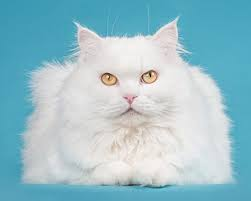

|  |
| Turkish Angora |
BEHAVIOR
Turkish Angoras are the life of any party. They are outgoing, curious, delighted to talk to strangers, and usually happy to have the company of other furry friends.
The Turkish Angora is very active. She'll climb to the highest points in your house to survey her domain, or gladly ride on your shoulders. She might even try to join you in the bathtub or the swimming pool out back! A trickster at heart, don't be surprised if she turns her silly sense of humor on you, leaping out and catching you unawares. She's also very chatty, so expect her to gloat if she's gotten the best of you.
GROOMING
Despite the Turkish Angora's delicate, luxurious appearance, grooming is relatively simple. Because Turkish Angoras have a single coat, they're far less prone to tangles and matting. Simply brush your cat's coat once per week to remove debris, and bathe as needed. Those with light colored Turkish Angoras may find they have to bathe their cats more frequently. Fortunately, many Turkish Angoras love water—and are natural swimmers!—so bath time may not be as challenging as you'd imagine.
Like all cats, your Turkish Angora may be susceptible to periodontal disease if proper dental hygiene isn't practiced. Daily brushing is ideal, but brushing weekly will offer your cat some protection.
Be sure to check your cat's ears weekly for dirt, debris, or signs of infection. If your cat's ears are dirty, gently clean them with a soft, cotton cloth. Avoid ear swabs, as they can damage the delicate, inner-ear structures. If your cat's ears smell funny, or appear to be red and inflamed, make an appointment with your vet ASAP—these are common signs of ear infection.
If your cat has discharge around his eyes, gently wipe it away with a clean cloth. It's important to use separate sections of the cloth for each eye to avoid spreading potential infection.
Because the Turkish Angora has higher energy levels, you should plan to exercise your cat for 15 to 30 minutes each day. Playing with cat toys is a fun, easy way to help your Turkish Angora expend some energy.
Keeping your Turkish Angora indoors at all times is highly recommended. Allowing him to venture outdoors puts him at risk of becoming lost, stolen, or injured.
HEALTH PROBLEMS
The Turkish Angora is a generally healthy cat, but—like all breeds—may be susceptible to certain health conditions. It's important to note that many white cats with one or two blue eyes are prone to deafness in one or both ears.
Some other health issues commonly seen in Turkish Angoras include:
- Hypertrophic cardiomyopathy: A type of heart disease characterized by the enlargement of the heart muscle, cardiomyopathy can affect both pedigreed and non-pedigreed cats.
- Ataxia: A fatal, neuromuscular disorder that affects kittens aged two to four weeks. Screening has greatly reduced the instances of ataxia.
Remember: Whether your cat is pedigreed or non-pedigreed, there's no guarantee that she will—or won't—develop certain health conditions. If you're concerned about your Turkisk Angora's health, talk to your veterinarian about steps you can take to ensure a long, happy, healthy life.
NUTRITION
Your cat's diet depends largely on its age, sex, and activity levels. If you're not sure how much to feed your cat, check the feeding guide from your favorite cat food, or talk to your veterinarian. Overfeeding can lead to obesity—which brings a whole host of other health problems—so it's important to maintain a healthy, balanced diet for your Turkish Angora.